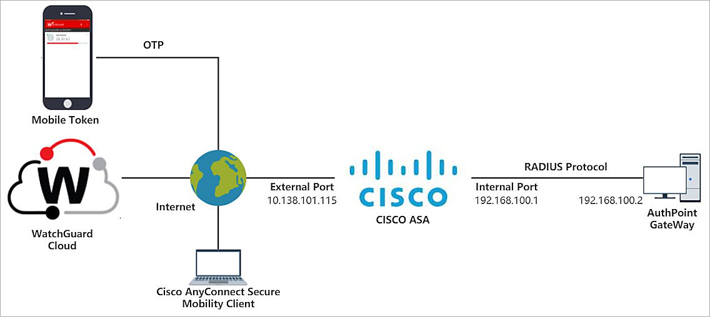
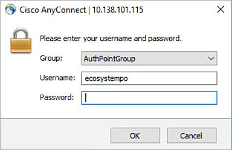
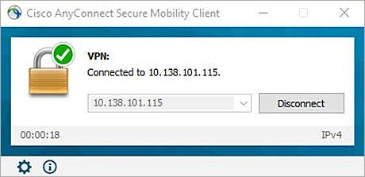

Deployment Overview
This document describes how to set up multi-factor authentication (MFA) for Cisco® ASA (Adaptive Security Appliance) with AuthPoint as an identity provider. Cisco ASA must already be configured and deployed before you set up MFA with AuthPoint.
Cisco ASA can be configured to support MFA in several modes. For this integration, we set up RADIUS authentication with AuthPoint.
This integration was tested with version 9.12(2) of Cisco ASA 5506.
Cisco ASA Configuration for RADIUS Authentication
AuthPoint communicates with various cloud-based services and service providers with the RADIUS protocol. This diagram shows an overview of the configuration required for RADIUS authentication.

Before You Begin
Before you begin these procedures, make sure that:
- Cisco AnyClient VPN client users can authenticate through the Cisco ASA with a static password and successfully establish a VPN connection
- You have installed the Cisco AnyConnect Secure Mobility Client application
- You have installed and configured the AuthPoint Gateway (see About Gateways)
- A token is assigned to a user in AuthPoint
Configure Cisco ASA
Add the AuthPoint Gateway to the AAA Server Groups
To use the RADIUS authentication with Cisco ASA, you must configure a RADIUS server (AuthPoint Gateway) in the AAA Server Groups.
- Run Cisco Adaptive Security Device Manager (ASDM).

- Select Configuration.
- Select Device Management > Users/AAA > AAA Server Groups.
- Next to the AAA Server Groups section, click Add.
- In the Add AAA Server Group window, in the AAA Server Group text box, type a name for the group.
- From the Prorocol drop-down list, select RADIUS.
- Click OK to save the AAA server group. Leave the default value for other settings.

- Click OK to save the AAA Server Group.
- From the AAA Server Groups list, select the AAA Server group you created.
- Next to the Servers in the Selected Group section, click Add to add a AAA Server for the selected AAA Server group.

- In the Add AAA Server window, from the Interface Name drop-down list, select the interface for connections to the AuthPoint Gateway.
- In the Server Name or IP Address text box, type the IP address of the AuthPoint Gateway.
- Leave Timeout set to the default value of 10.
- In the Server Authentication Port text box, type the RADIUS server port. The default value for AuthPoint is 1812.
- In Server Accounting Port text box, type the RADIUS server account port. The default value for AuthPoint is 1813.
- In the Server Secret Key text box, type a shared secret key to use for communication with the RADIUS server (AuthPoint Gateway).
- In the Common Password text box, type a password.

- Click OK to save the AAA Server settings.

- Click Apply to apply the settings.
Add Standard ACL for AuthPoint User Group
To set up the remote VPN connection, you must configure an access control list (ACL) in the firewall ACL for the VPN client users. The ACL name must match the name of the authentication user's AuthPoint group.
- Select Firewall > Advanced > Standard ACL.
- Click Add > Add ACL to add an ACL.
The Add ACL window appears. - In the ACL Name text box, type a name. The ACL name must match the name of the authentication user's AuthPoint group.

- Click OK to save the ACL.

- Select your ACL.
- Click Add > Add ACE to add ACE for your ACL.
The Add ACE window appears. - From the Address drop-down list, select the internal network that VPN client users will access.

- Click OK to save the ACE.

- Click Apply to apply the settings.
- Click Save.
Configure a VPN Connection
You must configure a VPN connection for RADIUS-based authentication in the Cisco ASA. In our example, we use Cisco AnyConnect VPN. AnyConnect is a VPN client that creates a secure, remote-access VPN tunnel to Cisco ASA.
Add a Group Policy for AnyConnect Connection
Tunnel groups identify the group policy for a specific connection. If a user is not assigned to a group policy, the default group policy for the connection is used. In our example, we set up a new group policy for AuthPoint authentication.
- Select Remote Access VPN > Network(Client) Access > Group Policies.
- Click Add > Internal Group Policy to add a Internal group policy.
The Add Internal Group Policy window appears. - In the Name text box, type a name for your group policy.
- Click More Options.
- For Tunneling Protocols, deselect the Inherit check box. Select the Clientless SSL VPN, SSL VPN Client, IPsec IKEv1, and IPsec IKEv2 check boxes.

- Select Advanced > Split Tunneling to configure Split Tunneling settings.
- For Policy, deselect the Inherit check box. From the drop-down list, select Tunnel Network List Below.
- For Network List, deselect the Inherit check box. From the drop-down list, select the Standard ACL group you added.

- Click OK to save the group policy.

- Click Apply to apply settings.
Define VPN Client Address Pool
VPN address pools define a range of addresses that AnyConnect remote clients can receive when you set up a remote VPN connection.
- Select Remote Access VPN > Network (Client) Access > Address Assignment > Address Pools.
- Click Add > IPv4 Address Pool to add an IPv4 address pool.
The Add IPv4 Pool window appears. - In the Name text box, type a name.
- In the Starting IP Address text box, type a start IP address.
- In the Ending IP Address text box, type an end IP address.
- In the Subnet Mask text box, type the subnet mask.

- Click OK to save the address pool.

- Click Apply to apply settings.
Upload AnyConnect Client Software
You must upload a designated image to the Cisco ASA for the AnyConnect VPN client. This image enables users to download the AnyConnect software from the Cisco ASA portal. If an AnyConnect image has not been uploaded, you are prompted to upload an image when you enable AnyConnect VPN Client access.
In this example, we use anyconnect-win-4.7.04056-webdeploy-k9.pkg.
- Select Remote Access VPN > Network (Client) Access > AnyConnect Client Software.
- Click Add to add the AnyConnect Client Software.
The Add AnyConnect Client Image window appears.
- Click Upload.
The Upload Image window appears. - Click Browse Local Files and select the AnyConnect Client Image file.

- Click Upload File.
- In the Add AnyConnect Client Image window, click OK.

- Click Apply.

Configure a Connection Profile for AnyConnect Connection
- Select Remote Access VPN > Network (Client) Access > AnyConnect Connection Profiles.
- In the Access Interfaces section, select the Enable Cisco AnyConnect VPN Client access on the interfaces selected in the table below check box.
- In the Access Interfaces list, select the Allow Access and Enable DTLS check boxes for the interfaces configured for VPN connections.

- In the Connection Profiles section, click Add.
- In the Add AnyConnect Connection Profile window, in the Name text box, type a name for your AnyConnect connection profile.
- In the Aliases text box, type an alias name.
- From the AAA Server Group drop-down list, select the AAA server group that is used for authentication with the AuthPoint RADIUS resource.
- In the Client Address Assignment section, type a DHCP Server IP address in the DHCP Servers text box or type a Client Address Pool for the VPN clients. In our example, we use the client address pool that we added.
- In the Default Group Policy section, from the Group Policy drop-down list, select the group policy specified for authentication with the AuthPoint RADIUS resource.
- Select the Enable SSL VPN client protocol and Enable IPsec(IKEv2) client protocol check boxes.
- In the DNS Servers text box, type the IP address of the DNS server. In our example, we use a DNS server in the internal network that VPN clients could access.
- If necessary, in the Domain Name text box, type the domain name.

- Click OK to save the AnyConnect connection profile.
The Add AnyConnect Connection Profile window closes. - In the Login Page Setting section, select the Allow user to select connection profile on the login page check box.


- Click Apply.
Exempt VPN Traffic from Network Address Translation
If network address translation is enabled on the Cisco ASA, the VPN traffic must be exempted from this translation. In this case, we define VPN traffic network objects and then define a NAT rule for the VPN traffic.
- Select Firewall > Objects > Network Objects/Groups.
- Click Add-> Network Object .
The Add Network Object window appears. - In the Name text box, type NETWOK_OBJ_192.168.100.0_24. This is the internal network that VPN clients will access.
- From the Type drop-down list, select Network.
- In the IP Address text box, type 192.168.100.0.
- In the Netmask text box, type 255.255.255.0.
- (Optional) Type a description for the network object.
- Click OK.

- Click Add to add another network object.
The Add Network Object window appears. - In the Name text box, type NETWORK_OBJ_192.168.35.0_24. This is the VPN clients address pool network that we configured.
- From the Type drop-down list, select Network.
- In the IP Address text box, type 192.168.35.0.
- In the Netmask text box, type 255.255.255.0.
- (Optional) Type a description for the network object.

- Click OK.

- Select NAT Rules.
- Click Add-> Add NAT Rule Before "Network Object" NAT Rules.
The Add NAT Rule window appears. - From the Source Interface drop-down list, select internal.
- From the Destination Interface drop-down list, select External.
- From the Source Address drop-down list, select NETWOK_OBJ_192.168.100.0_24. This is the internal network that VPN clients will access.
- From the Destination Address drop-down list, select NETWORK_OBJ_192.168.35.0_24. This is the VPN client address pool network we defined.
- From the Service drop-down list, select any.
- From the Source NAT type drop-down list, select Static.
- In the Options section, select the Enable rule, Disable Proxy ARP on egress interface, and Lookup route table to locate egress interface check boxes.
- Leave the default for all other settings.

- Click OK to save the NAT rule.
The Add NAT Rule window closes. - Click Apply.

Configure AuthPoint
Before AuthPoint can receive authentication requests from Cisco ASA, you must specify Cisco ASA as a RADIUS client resource in AuthPoint. You must also create an authentication policy for the Cisco ASA resource and you must bind the Cisco ASA resource to the AuthPoint Gateway.
Add a RADIUS Resource in AuthPoint
From the AuthPoint management UI:
- From the navigation menu, select Resources.
Click Add Resource.
The Add Resource page opens.

- From the Type drop-down list, select RADIUS Client.
Additional fields appear.

- On the RADIUS Client page, in the Name text box, type a name for this resource.
- In the RADIUS client trusted IP or FQDN text box, type the Cisco ASA Internal interface IP address.
- In the Value sent for RADIUS attribute 11 (Filter-Id) drop-down list, select User's AuthPoint group.
- In the Shared Secret text box, type the shared secret for the Cisco ASA.

- Click Save.
Add a Group in AuthPoint
You must have at least one user group in AuthPoint to configure MFA. If you already have a group, you do not have to add another group.
To add a WatchGuard Cloud-hosted group to the WatchGuard Cloud Directory:
- Go to Configure > Directories and Domain Services.
- Click the WatchGuard Cloud Directory domain name. If you have not yet added the WatchGuard Cloud Directory, click Add Authentication Domain and select the WatchGuard Cloud Directory.
The New Group page appears.

- In the Groups tab, click Add Group.
- In the Group Name text box, type a descriptive name for the group.
- (Optional) In the Description text box, type a description of the group.

- Click Save.
Your group is added to the WatchGuard Cloud Directory and to AuthPoint.
Add an Authentication Policy to AuthPoint
Authentication policies specify which resources users can authenticate to and which authentication methods they can use (Push, QR code, and OTP).
You must have at least one authentication policy in AuthPoint that includes the Cisco ASA resource. If you already have authentication policies, you do not have to create a new authentication policy. You can add this resource to your existing authentication policies.
Users that do not have an authentication policy for a specific resource cannot authenticate to log in to that resource.
To configure an authentication policy:
- From the navigation menu, select Authentication Policies.
The Authentication Policies page opens.

- Click Add Policy.
The Add Policy page opens.

- In the Name text box, type a name for this policy.
- From the Select the Authentication Options drop-down list, select Authentication Options, then select which authentication options users can choose from when they authenticate.
If you enable the push and OTP authentication methods for a policy, RADIUS client resources associated with that policy use push notifications to authenticate users.
QR code authentication is not supported for RADIUS client resources.
- From the Groups drop-down list, select which groups this policy applies to. You can select more than one group. To configure this policy to apply to all groups, select All Groups.
- From the Resources drop-down list, select the resource that you created in the previous section. If you want this policy to apply to additional resources, select each resource this policy applies to. To configure this policy to apply to all resources, select All Resources.

-
(Optional) If you have configured policy objects such as a Network Location, select which policy objects apply to this policy. When you add a policy object to a policy, the policy only applies to user authentications that match the conditions of the policy objects. For example, if you add a Network Location to a policy, the policy only applies to user authentications that come from that Network Location. Users who only have a policy that includes a Network Location do not get access to the resource when they authenticate outside of that Network Location (because they do not have a policy that applies, not because authentication is denied).
For RADIUS authentication, policies that have a Network Location do not apply because AuthPoint does not have the IP address of the user.
If you configure policy objects, we recommend that you create a second policy for the same groups and resources without the policy objects. The policy with the policy objects should have a higher priority.

- Click Save.
Your policy is created and added to the end of the policy list.When you create a new policy, we recommend that you review the order of your policies. AuthPoint always adds new policies to the end of the policy list.
Bind the RADIUS Resource to a Gateway
To use RADIUS authentication with AuthPoint, you must have the AuthPoint Gateway installed on your corporate network and you must assign your RADIUS resources to the Gateway in the AuthPoint management UI. The Gateway functions as a RADIUS server.
If you have not configured and installed the AuthPoint Gateway, see About Gateways.
- From the navigation menu, select Gateway.
- Select the Name of the Gateway.
-
From the RADIUS section, in the Port text box, type the port number used to communicate with the Gateway. The default ports are 1812 and 1645.
If you already have a RADIUS server installed that uses port 1812 or 1645, you must use a different port for the AuthPoint Gateway.
- From the Select a RADIUS Resource drop-down list, select your RADIUS client resource.
- Click Save.
Add Users to AuthPoint
Before you assign users to a group, you must add the users to AuthPoint. There are two ways to add AuthPoint user accounts:
- Sync users from an external user database
- Add WatchGuard Cloud-hosted AuthPoint users
Each user must be a member of a group. You must add at least one group before you can add users to AuthPoint.
To import users from Active Directory, Microsoft Entra ID, or an LDAP database, you must add an external identity in the AuthPoint management UI. External identities connect to user databases to get user account information and validate passwords.
- To sync users from Active Directory or an LDAP database, you must add an LDAP external identity
- To sync users from Microsoft Entra ID, you must add a Microsoft Entra ID external identity
When you sync users from an external user database, you can sync any number of users and they are all added to AuthPoint at one time. Users synced from an external user database use the password defined for their user account as their AuthPoint password.
To learn how to sync users, go to Sync Users from Active Directory or LDAP and Sync Users from Azure Active Directory.
You create WatchGuard Cloud-hosted users and groups from the WatchGuard Cloud Directory in WatchGuard Cloud. Directories and Domain Services is where you add shared authentication domains for WatchGuard Cloud devices and services, such as AuthPoint.
Users that you add to the WatchGuard Cloud Directory are automatically added to AuthPoint as well.
You add local AuthPoint users form Directories and Domain Services. You manage the users in AuthPoint on the Users page.
When you add WatchGuard Cloud-hosted AuthPoint users, you choose whether the user is an MFA user or a non-MFA user.
- MFA users are user accounts that will use AuthPoint multi-factor authentication to authenticate. This is not related to the AuthPoint Multi-Factor Authentication license type.
- Non-MFA users are users that will only ever authenticate with a password, such as a service account user. Non-MFA users do not consume an AuthPoint user license and cannot authenticate to resources that require MFA. They can only authenticate to protected resources if the non-MFA user account has a password only authentication policy for that resource.
After you add a user, you can edit the user account if you need to change their account type. When you change a user account from MFA to non-MFA, AuthPoint deletes the tokens and password vault (if applicable) that belong to the user. This action cannot be undone.
Unlike users synced from an external user database, WatchGuard Cloud-hosted AuthPoint users define and manage their own AuthPoint password. When you add a WatchGuard Cloud-hosted user account, the user receives an email that prompts them to set their password.
To learn how to add WatchGuard Cloud-hosted AuthPoint user accounts to the WatchGuard Cloud Directory, go to Add Local Users to an Authentication Domain.
Test the Integration
To test the integration of AuthPoint and the configuration of your Cisco ASA, you can authenticate with a mobile token on your mobile device. For RADIUS resources, you can authenticate with a one-time password (OTP) or push (based on your authentication policy).
In this example, we show the OTP authentication method (users append the OTP for their token to their password).
- Run the Cisco AnyConnect VPN client.
- Type your Cisco ASA public address or IP address. Click Connect.

- In the Security Warning dialog box, click Connect Anyway.


- From the Group drop-down list, select your group for the VPN connection.
- In the Username text box, type your user name.
- In the Password text box, type your password and the OTP for your token (shown in the AuthPoint mobile app). Do not add a space between your password and your OTP.
- Click OK.
You are logged in successfully.
